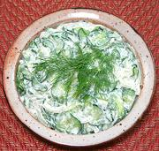

|
Cucumber Salad with CreamFrance - Concombres à la Crème | ||||
| Serves: Effort: Sched: DoAhead: |
5 salad ** 1 hr Yes |
This variation of the standard cucumber salad, replacing oil with cream, is very popular in france. See also Cucumber Cream Salad for a different version. | |||
|
2 9 3 1 1 7-1/2 2 1/3 |
# oz t cl T oz t t |
Cucumbers (1) Onion, white Salt Garlic Dill, fresh (2) Crème Fraîche (3) Vinegar, white wine Pepper |
Salting and wringing out the Cucumbers is to prevent the salad from becoming watery. Make - (1 hr - 20 min work)
|